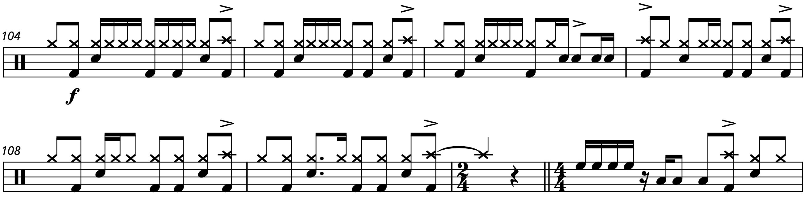

Transcription: “Ten Years Gone” — John Bonham with Led Zeppelin

I probably have 12 or so full–length transcriptions laying around in a WIP folder that I haven’t shared yet, and I’m not really sure if I ever will. At least not in their current form, since note–for–note drum sheet music for an entire track often isn’t necessary. But today, I decided to share my interpretation of Led Zeppelin’s “Ten Years Gone”. I know, a full song! How exciting.
Like “How Many More Times”, this was a Zeppelin song that escaped me for a few years after I first go into the band. I really never gave this track a proper listen until right after I graduated high school. And I must say, the tune is one of Zeppelin’s most engaging and emotional. It also has a fascinating structure: the song is pretty much built around 3 riffs, with a solo section and a bridge that are both only played once. Yet it certainly feels complex and it’s easy to lose track of the different movements.
“Ten Years Gone” certainly has a forlorn, pensive mood to it, although I can't say if that was the intent from the beginning when Jimmy wrote the number, or if it took that shape as Plant cooked up his lyrics. In any case, we come to a classic problem involving the drums. I think I’ve previously written about how drums are limited in the kinds of musical statements they can make. You can listen to a brief piano piece and immediately associate certain emotions with it. How do you do that with a drum set?
Ultimately, I don’t think you can, but all the while Bonham gives us a lot to learn from on this tune. Bonzo is often esteemed for beating his drums senseless, but tracks like “Ten Years Gone” really show off his finesse and delicacy. In fact, it almost sounds like he swapped his hickory sticks out for maple ones — the drums here have such an airy, ethereal sound to them (although I doubt he changed his sticks; the truth is Bonham just really knew how to hit the drums).
You should familiarize yourself with the main riff. For starters, the image at the top of the post reveals that the song starts on the “+” after 2.
As a fun piece of Zeppelin trivia, that 8th note leading into the first chord is actually cut out on some masters but left in on others. I can’t imagine why.
Moving on, you can glance at the sheet music and see there’s often an emphasis on the 8th note upbeats that are right after beats 2 and 4; I like to think of these much like the skipped or pushed notes you often hear in swing music, where the end of a phrase is moved a bit forward from a beat or downbeat.
To top it all off, bars of 2/4 are frequently snuck into this number. Of course, all of this stuff is hard to notice unless you actually sit down and count the song out.
In terms of an actual groove, Bonham typically plays a straight–ahead 8th note beat, eschewing syncopation in favor of something more austere. During the solo, he does dish out a little bit of the funk, and you can hear that a little goes a long way. There are also some ghost notes and drag slipped in here and here, often barely audible.
A very intriguing moment happens during the bridge, where Bonham plays different 16th note patterns on the ride:
Bonzo rarely did this — the only other example that comes to mind is the cowbell on “Good Times Bad Times”. I’m not sure what inspired him to whip this out for “Ten Years Gone”. Maybe it’s to keep things from sounding like they’re plodding around too much, but who knows. Not every moment of a particular performance needs an explanation, so maybe Bonham just thought it sounded good, or maybe he was simply trying out something different.
Moreover, Bonham uses his fills to carry the tune through greater and greater climaxes, á la “Hey Joe”. My favorite moment overall has to come during the outro when Bonham finally dishes out the fast singles just as Plant actually delivers the lyric “ten years gone” for the first time. It feels like the whole song was building to this one measure:
On paper, the 32nd notes look faster than they actually are. 32nd notes tend to appear intimidating for drummers; of course, you could write the fill with 16th notes at 152, something many drummers are capable of handling. Even still, these singles sound absolutely monstrous.
“Ten Years Gone” on Songwhip.
Posted on June 13, 2021
Tags: 2021 • Transcription • John Bonham • Led Zeppelin